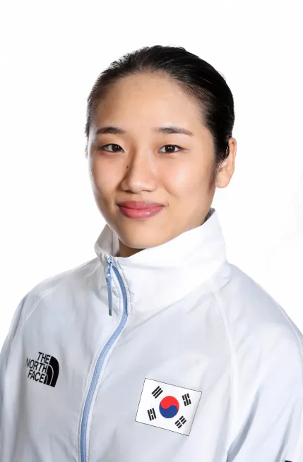

"나 제일 늦게 만나는 애가 은메달"

저런 괴물한테 1패를 남긴 선수는 대체
진자 어케 1패함
한국 진짜 신기하다.. 김연아 안세영 이런 세계적인 선수가 한명씩 꼭 나옴
일단 5천만명이라는 모수 자체가 작지 않고, 그 중에서 엘리트 체육인을 양성해내는 시스템, 그걸 뒷받침해줄 경제력이 있는 나라라서 그렇게까지 신기할 일은 아님.
하긴 생각해보면 관심이 없을뿐이지 중국은 메달수만봐도 안세영같은 사람 ㅈㄴ많긴하겠다
다른 나라보면 이런 선수들 몇명~수십명 있음
5천만 국가에서 간간히 1~2명씩 나오는건 이상한게 아님
근데 중국 축구선수는 진짜안나옴 신기해 ㅋㅋ
ㅋㅋㅋㅋㅋㅋㅋㅋ거기는 수백만명의 메시들이 천안문당하거나 하층민으로 입에 풀칠하며 살아가지않을까
엘리트 체육시스템
ㅋㅋㅋㅋㅋ
신세영
닉값 개못하네,,,,
이름으로 비틱질 ㅈㄴ 함
나 안세영...
상.향.필.수
나 안세영 하면서 방심하게 만들고 존나쌔게 멸망시키는 코트 위의 학살자 ㄷㄷ
이번에 메달 따면 군면제라고 저렇게 기를쓰고 이겨먹으려 한다는 소리도 있더라. 에휴 그놈의 군대가 뭐라고 좀 대국적으로 경기를하세요 세영씨
지난번에도 금메달 따서 이미 군면제임 좀 알고 말하셈;;;
꼬우면 덤비면 됨
몇 세트를 해도 다 받아줌
진짜 말도 안되더라. 세계 랭커들은 그냥 어린애마냥 가지고 노는데 와~
적어도 30살까지는 무릎에 문제만 없으면 누구도 넘볼수 없는 역사를 쓰겠더만
마이클 조단보다도 더
암낫스트롱
아.. 이쁘고 말만적었어도
???: 9점 쏘면 지는게임